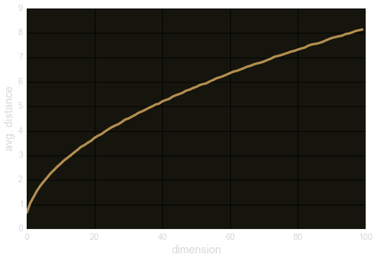
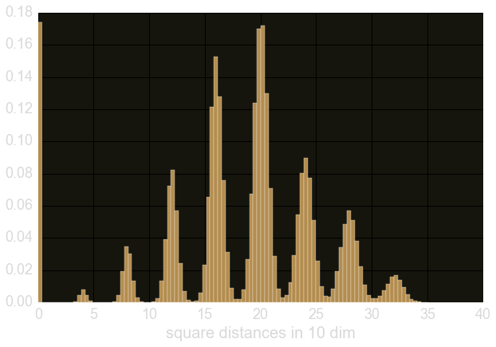
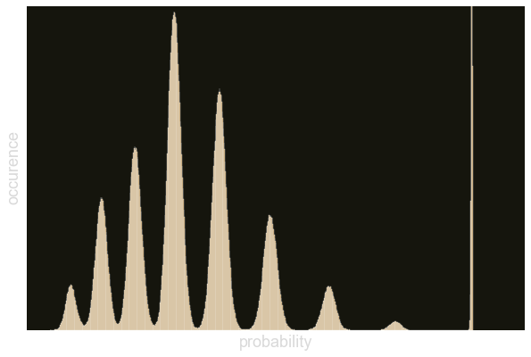
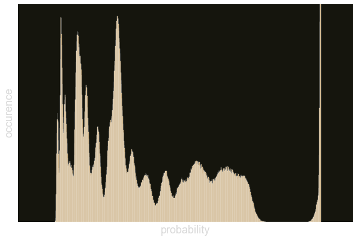
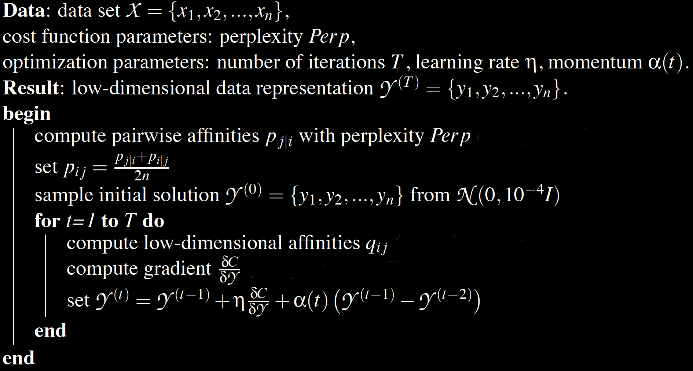
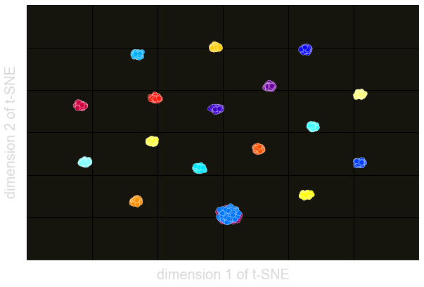

Data life cycle
Visualization influences how we use and think about data
Visualize high-dimensional data?
- 1D: Histogram
- 2D: scatter plot
histograms don't capture information between variables
- 3D: scatter plot
we start to hide information
- $n>3$ D: I have no idea ...
What are we looking for in the data?
Looking for patterns!
- clustering, repulsion
- linear relationships
- ...
Curse of dimensionality
- Einstein is $512 \times 512$ px
- Einstein is colorful
- Dimensionality: $512^2 \times 3 = 786432$!
Curse of dimensionality - cont'd
- $d$-dimensional unit ball:
$$ V(d) \sim \frac{\text{e}^{d}}{d^{d-1/2}} \stackrel{d\rightarrow\infty}{\longrightarrow} 0$$
- $\mathbb{x} \in \text{Unif}^d(0,1)$
- Most data lies outside unit ball!
- data becomes sparse
- difficult to detect patterns!
Curse of dimensionality - cont'd
- uniform random points in $d$ dimensions
- avg. distance grows $\sim \sqrt{d}$

clustering properties
- ideal clusters have separation of scale!
- small intra-cluster distances
- large inter-cluster distances
- hypercube in 10d
- Gaussian clusters at the corners
- calculate distance distribution

Dimensional Reduction via Distribution Matching
Can we model the distance distribution using "fake" data from a lower dimensional subspace?
need a concept to measure "distance" between distributions
Kullback-Leibler Divergence
Measuring Similarity of Distributions
$$
\begin{align}
\text{KL}(P||Q) = & \sum_i P_i \log \left( \frac{P_i}{Q_i} \right) \\
= & \sum_i P_i \log \left( P_i \right) - \sum_i P_i \log \left( Q_i \right) \\
= & - H(P) + H(P, Q)
\end{align}
$$
How much information does $Q$ contain about $P$?
Some Properties of KLD
- positive semi-definite: $KL(P \vert \vert Q) \geq 0$
- If $P = P_1 \cdot P_2$ then $KL(P\vert \vert Q) = KL(P_1 \vert \vert Q_1) + KL(P_2\vert \vert Q_2)$
- KLD is NOT a metric
- $KL(P\vert \vert Q) \neq KL(Q\vert \vert P)$
- $\vert \vert x + y\vert \vert \leq \vert \vert x \vert \vert + \vert \vert y\vert \vert$
KLD in Practice
Application to the Central Limit Theorem
- $Y_i \sim \text{Bern} (p)$, $i \in \{1, n\}$
- $Y = \sum_{i=1}^n Y_i$
$\qquad\rightarrow \mathcal{N} \big(np, np(1-p)\big)$
- How fast do we approach Gaussian?
t-SNE
- Use softmax probability distribution in high-dim space
$$p_{ij} = \frac{\text{exp}(-||x_i-x_j||^2)}{\sum_{r\neq s}\text{exp}(-||x_r-x_s||^2)}$$

- small probability $=$ large distance
t-SNE cont'd
- Use Cauchy (student-t) probability distribution in low-dim space
$$q_{ij} = \frac{(1+||y_i-y_j||^2)^{-1}}{\sum_{r\neq s}(1+||y_r-y_s||^2)^{-1}}$$

- with some squinting: 16-18 clusters
Crowding Problem
Why use the t-distibution
- high-dimension has "more directions" to have same distance in
- low-dimensions would be over-crowded at the same distance
- no separation of clusters
- Cauchy is "scale" invariant
- points within a cluster interact the same with points in other clusters
- similar to gravity
How do we learn the t-SNE representation?
- Stochastic gradient descent
- $\frac{\partial C}{\partial y_{i}} = \frac{\partial \text{ KL}(P \vert \vert Q)}{\partial y_{i}}
= 4\sum_{j}(p_{ij}-q_{ij})(y_i-y_j)(1+||y_i-y_j||^2)^{-1}$
>

import sklearn.manifold as mf
tsne =mf.TSNE(n_components=2, n_iter=1000, perplexity=87.5)
Y = tsne.fit_transform(data)
Back to Our Hypercube

Take away ...
- Intuition is almost always wrong in high dimensions
- Visualization can help to understand structure of the data
- t-SNE is a dimensionality reduction technique
- reduction by matching two pairwise distance distribution
Thanks!